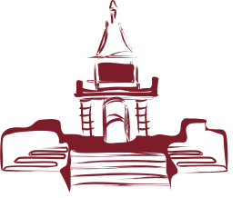
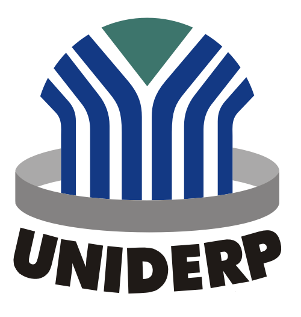

Formação Acadêmica
Pós-Graduação em Engenharia e Gerenciamento de Manutenção
Instituição: Universidade Cândido Mendes Pro Minas;
Situação: Em andamento;
Duração: Fevereiro de 2018 a Julho de 2019;
Resumo: O curso visa formar profissionais para manejo, tratamento e controle de problemas na produção e manutenção de equipamentos e instalações industriais, incluindo prevenção e controle de riscos em máquinas, equipamentos e instalações; práticas de manutenção; gestão de qualidade; entre outras.
Pós-Graduação em Engenharia de Segurança do Trabalho
 Instituição: Pontifícia Universidade Católica de Minas Gerais;
Instituição: Pontifícia Universidade Católica de Minas Gerais;
Situação: Em andamento;
Duração: Setembro de 2017 a Março de 2020;
Resumo: Curso de especializaçao EAD, com reconhecimento pelo o sistema CONFEA/CREA abordando a segurança no trabalho em todos os setores da indústria, de acordo com as NRs e leis existentes no país.
Graduação em Engenharia Civil
Instituição: Universidade para o Desenvolvimento do Estado e da Região do Pantanal (Uniderp);
Situação: Concluído;
Duração: Fevereiro de 2008 a fevereiro de 2013;
Resumo: Curso presencial com foco em técnicas práticas de construção e fiscalização, com visitas frequentes ao canteiro de obras e trabalhos voltados para projetos arquitetônicos, estruturais, hidráulicos e elétricos. Realização de atividades em laboratórios de concreto, elétrica, mecânica do solo, entre outros.